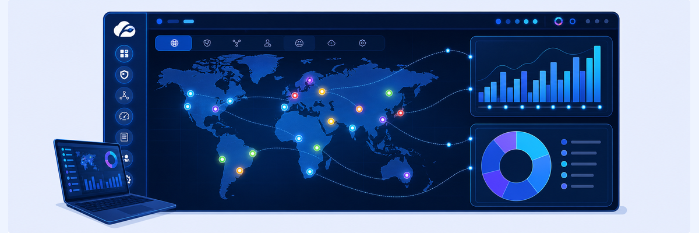
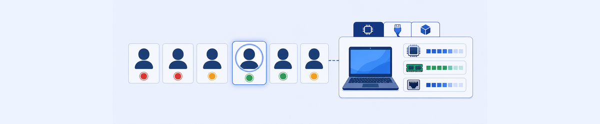
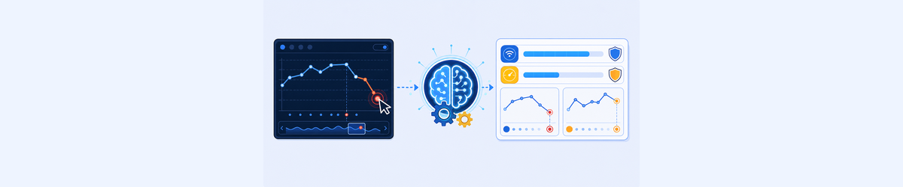
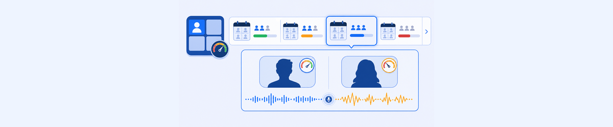
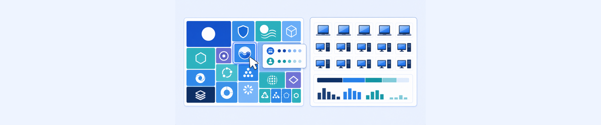
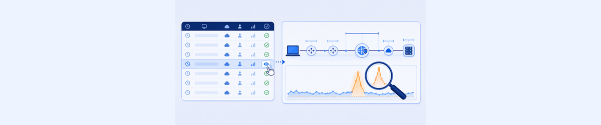
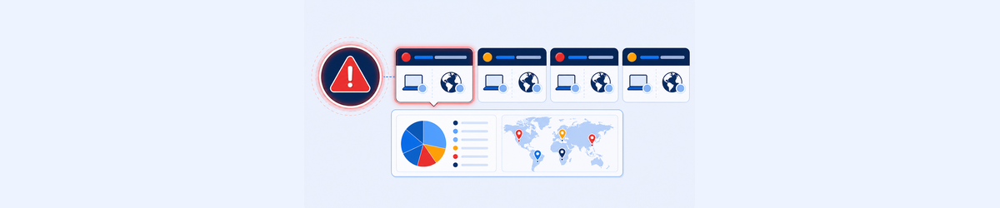

Lab 1: Navigating the ZDX Admin Portal
LAB 1
Scenario: You are a ZDX Helpdesk Administrator at a Zero Trust Exchange demonstration organisation. Before handling escalations, familiarise yourself with every major ZDX dashboard so you know exactly where to look when a user reports an issue.

THINK FIRST · ZDX DASHBOARD ORIENTATION
A skilled ZDX operator knows which dashboard to open before they know what the problem is. The portal organises data by scope: fleet-wide incidents, per-application trends, per-user drill-downs.
- The Performance Overview shows Most Impacted Applications and a ZDX Score map. What is the ZDX Score and how is it calculated from 0–100?
- ZDX has Performance Overview, Incidents Overview, and Self Service Overview dashboards. When would you start at Incidents instead of Performance?
- If the Y-Engine reports Low Wifi Signal with 90% confidence but the user insists their Wifi is fine, what would you check next to validate or disprove the finding?
Task 1.1: View ZDX Dashboard
1 Log In and Explore Performance Overview
- Launch your browser and navigate to
https://admin.zdxcloud.net/or click Open ZDX Admin Portal in the Skytap frame. - Log in with your ZDX Admin credentials:
- Admin User ID:
ptcb76-ADMIN@thezerotrustexchange.com - Session Password: <Session Password>
- Admin User ID:
- At the top of the Performance Overview page, select 24 Hours from the dropdown.
- Scroll through Most Impacted Applications — click any app to update the ZDX Score map.
- Use Draw Fence to select a geographic area, then click Filter Selection.
- Click Geolocations, select a location, and click Apply. Then click Reset.
- Go to Dashboard › Incidents Overview and review Total Incidents and Incidents Across Key Areas.
- Scroll to the Incidents by Epicenters map and click a marker to view incident details.
- Go to Dashboard › Self Service Overview and review notification summary graphs.
Note: You are accessing the ZDX Admin Portal as a Read-Only Administrator. You can view all dashboards and reports but cannot save configuration changes.
My Questions
My Notes
Task 1.2: View Applications Overview Dashboard
2 Browse Application Performance
- From the left menu, select Applications.
- Sort the table by ZDX Score Trend and click the application with the lowest ZDX Score.
- In the ZDX Score Over Time graph, drag to zoom in on a period of significant change.
- Click Zoom Out to reset the view.
- Scroll to the Impacted Departments, Impacted Regions, and Impacted Zscaler Locations panels.
- View the application’s configured Probe Status panel.
My Questions
My Notes
Task 1.3: View User Overview Dashboard
3 Browse User-Level Performance
- From the left menu, select Users.
- Select an application from the dropdown and click Apply.
- Under ZDX Score User Distribution, toggle between Poor, Okay, and Good to update the user table.
- Select a user with Poor or Okay performance.
- Click View More Device Details and explore the Hardware, Network, and Software tabs.
- Scroll to the Web Probe Metrics section and click a point on the Page Fetch Time graph to see the breakdown.
- Scroll down to Cloud Path metrics and explore the Hop View and Command Line View.
- Scroll to Device Health and click a point on the CPU Usage graph to see Most Impacted Processes.
- Examine the User Device Events timeline.

My Questions
My Notes
Task 1.4: View Automated Root Cause Analysis Data
4 Use the ZDX Y-Engine
- From the left menu, select Search and type a user name (e.g.
Curtis Hardwick). - Click the user name in the search results to open their report.
- Select an application and click Apply.
- In the ZDX Score Over Time graph, click a point with a Poor score and click Analyze Score.
- Review the The following factors that might have impacted the ZDX score table, including Factor, Explanation, and Confidence Level.
- Drag to select a time range and click Analyze Range. Review the results.
- Click Compare to and select Same time 1 day ago. Scroll through the side-by-side comparison.

My Questions
My Notes
Task 1.5: View Call Quality Dashboards
5 Review Microsoft Teams Call Quality
- From the left menu, select Applications › Microsoft Teams Call Quality.
- Review the ZDX Score Over Time graph. Click the Meetings tab to see recent meetings.
- Click a Meeting ID to view meeting details and participant sessions.
- Click the expand icon on a user row to view their device-level report.
- Scroll to Meeting Monitoring Metrics and examine Audio MOS Score, Audio Latency, and Jitter graphs.
- Scroll down to the Cloud Path section and review the latency path to the Teams Transport Relay URL.

My Questions
My Notes
Task 1.6: View Inventory Dashboards
6 Browse Software and Device Inventory
- From the left menu, select Inventory › Software Overview.
- Mouse-over an application tile to see total installations and versions.
- Click a tile (e.g. Microsoft Edge) and review the details.
- Click the eye icon on a device row to view version history.
- Select Inventory › Device Overview and click a device tile to review hardware, network, and software details.

My Questions
My Notes
Task 1.7: View Deep Tracing Results
7 Review a Deep Tracing Session
- From the left menu, select Administration › Deep Tracing.
- In the History table, click the eye icon for a completed session.
- Scroll through the report data and click on a CPU usage spike to see the Most Impacted Processes list.
- Click Export PDF to download the report (optional).

My Questions
My Notes
Task 1.8: View Alerts
8 Explore Ongoing and Historical Alerts
- From the left menu, select Alerts.
- Review the counts for Ongoing Alerts, Alert History, Impacted Devices, Geolocations, and Applications.
- With the Ongoing Alerts tab selected, click the eye icon on any alert to see its details including Impacted Departments, Geolocations, and Expression Triggers.
- Return to the Alerts Overview page and click the Alert History tab to view an ended alert.

My Questions
My Notes
MENTAL NOTE
ZDX Score = composite 0–100 from Web Probe + Cloud Path data, normalised to user baseline. Navigate: Performance Overview for fleet view → Applications for app-specific trends → Users for individual drill-down → Y-Engine (Analyze Score) for AI root cause. Incidents track multi-user events; Alerts fire on configured thresholds.